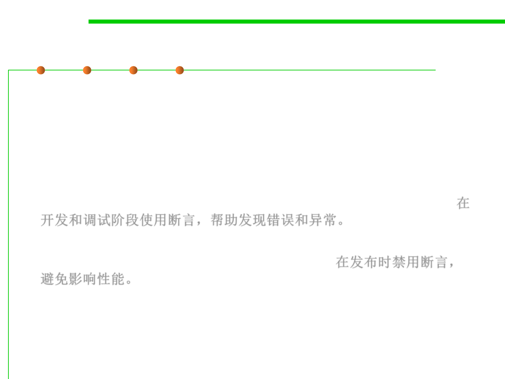

When to use assertions?
7.3 Assertions and Defensive Programming
▪ Normally, you don’t want users to see assertion messages in
production code; assertions are primarily for use during
development and maintenance.
▪ Assertions are normally compiled into the code at development
time and compiled out of the code for production. During
development, assertions flush out contradictory assumptions,
unexpected conditions, bad values passed to routines, and so on. 在
开发和调试阶段使用断言，帮助发现错误和异常。
▪ During production, they are compiled out of the code so that the
assertions don’t degrade system performance. 在发布时禁用断言，
避免影响性能。
▪ When should you write runtime assertions? As you write the code,
not after the fact. When you’re writing the code, you have the
invariants in mind. If you postpone writing assertions, you’re less
likely to do it, and you’re liable to omit some important invariants.